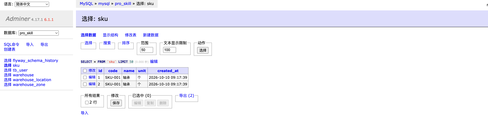

这 2 节课怎么用
- 看一次登录经过哪些文件夹。不改这些文件。
- 在 Swagger 里登录，再查仓库
WH-001。 - 用同一个页面把货品
SKU-001创建两次，到数据库里看见两行。 - 自己加上查重和唯一索引，第三次创建失败，库里这个编码只剩一行。
一次登录经过哪些层
浏览器发 POST /auth/login。代码按这个顺序走。Controller 里不写 SQL。
接 JSON
校验并签发 token
读 tb_user
tb_user
打开 src/main/java/com/eurasia/pro_skill/controller/AuthController.java。login 方法里只有 authService.login，然后把结果装成 LoginResponse。
仓库、库区、库位是同一套切法。对着这张表在项目里找文件。
| 包 | 这一层做什么 | 登录时看哪个文件 |
|---|---|---|
controller | 接 HTTP，校验入参 | AuthController |
controller/request | 请求体 | LoginRequest |
controller/response | 返回给页面的字段 | LoginResponse |
application | 业务 | AuthService |
domain | 业务对象，不带数据库注解 | User、AuthToken |
entity | 和表的一行对应 | UserEntity |
mapper | SQL | UserMapper |
converter | domain 和 entity 互转 | UserConverter |
SELECT。SQL 在 Mapper。后面加货品也是这几层：SkuController、SkuService、Sku、SkuEntity、SkuMapper、SkuConverter。用 Swagger 把登录走一遍
浏览器打开 http://localhost:8080/swagger-ui.html。分组来自代码里的 @Tag。现在能看到鉴权、用户、仓库、库区、库位，以及这周新加的货品。
1. 登录
找到「鉴权」，点开 POST /auth/login。这一行没有锁。

点 Try it out。请求体是下面这两行时，直接点 Execute。
{
"username": "admin",
"password": "Admin@123"
}

token，username 是 admin，role 是 ADMIN。把 token 整段复制下来，不要带引号。
2. 把 token 填进 Authorize
点右上角 Authorize。框里只贴 token，不要自己加 Bearer 。点 Authorize，再点 Close。锁从打开变成锁上。
这一步的意思：除了登录和注册，别的接口都要带这个 token。Swagger 会在后面的请求里自动加上。
3. 查仓库
找到「FR-01 仓库管理」，点开 GET /warehouses/list。Try it out，current 填 1，pageSize 填 10，其余空着，Execute。
records 里有编码 WH-001。货品接口同样要先授权。货品编码为什么不能重复
货品只记三样：编码、名称、单位。不做规格，不做批次。
SKU-001 时，后面入库、出库无法知道加的是哪一条、扣的是哪一条。编码必须只能有一行。项目里先留着这个错，有两处。
src/main/resources/db/migration/V7__create_sku_table.sql。表是sku，字段是id、code、name、unit、created_at。code写的是KEY idx_code (code)，这是普通索引，只方便查找，不阻止重复。src/main/java/com/eurasia/pro_skill/application/SkuService.java的create。它直接 insert，插入前不查这个编码是否已经有了。
接口是 POST /skus 和 GET /skus。创建时 Controller 把请求体转成 Sku，交给 SkuService。Service 再转成 SkuEntity，由 SkuMapper 插入。和登录是同一套分层。
自己把重复做出来
Swagger 里找到「货品」，点开 POST /skus。Try it out，请求体写成：
{
"code": "SKU-001",
"name": "轴承",
"unit": "个"
}
点 Execute。看到 200 和返回里的 id 之后，不要改请求体，再点一次 Execute。
id 不同，code 都是 SKU-001。再点开 GET /skus，Try it out，Execute。
id 不同。打开 http://localhost:8081。系统选 MySQL，服务器填 mysql，用户 root，密码 root，数据库 pro_skill。左侧点 sku 旁边的「选择」。
SKU-001，id 不同。页面能创建成功，是因为代码和表都允许重复，不是 Swagger 点错了。
自己改掉
不要改已经执行过的 V7__create_sku_table.sql。Flyway 不会把改过的旧文件再执行一遍。新加一个文件。
1. Mapper 增加按编码查询
在 SkuMapper 里加上：
@Select("SELECT * FROM sku WHERE code = #{code} LIMIT 1")
SkuEntity getByCode(String code);
这一步的意思：业务要知道这个编码是否已经有一行。SQL 仍然只写在 Mapper 里。
2. 插入前拒绝重复
在 SkuService.create 里，insert 之前加上。文件顶部要能 import com.eurasia.pro_skill.common.BusinessException。
SkuEntity existing = skuMapper.getByCode(input.getCode());
if (existing != null) {
throw new BusinessException(
"SKU_CODE_DUPLICATED",
"SKU_CODE_DUPLICATED：货品编码已存在：" + input.getCode());
}
这一步的意思：应用先拦住第二次创建。只加这段还不够，有人直接往表里插仍然可以重复，所以还要唯一索引。
3. 新迁移把编码改成唯一
新建 src/main/resources/db/migration/V8__sku_code_unique.sql，内容是：
ALTER TABLE sku DROP INDEX idx_code; ALTER TABLE sku ADD UNIQUE KEY uk_code (code);
这一步的意思：数据库不再接受第二个相同编码。旧的普通索引要先删掉，否则两个索引叠在一起，学生不容易看清约束是哪一个。
4. 先清掉已经重复的行
表里已经有两行 SKU-001 时，这条迁移会失败，应用起不来。在 Adminer 的 sku 表里删掉其中一行，只留一条 SKU-001。看 id，删较大的那个即可。
5. 重新构建应用容器
源码是在做镜像时编译的。只保存文件，正在跑的容器不会变。
docker compose -f docker-compose.dev.yml up -d --build app
这一步的意思：--build 按 Dockerfile 重新打包 jar，启动时 Flyway 执行 V8。等 pro-skill-app 变成 healthy。
6. 再创建一次同一个编码
Swagger 可能要重新登录、重新 Authorize。再对 POST /skus 提交一次 SKU-001。
SKU_CODE_DUPLICATED。Adminer 的 sku 表里，SKU-001 仍然只有一行。换一个新编码，例如 SKU-002，仍然可以创建成功。